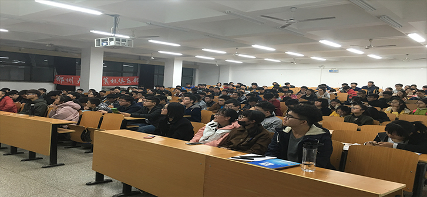

活动详情
计算机知识讲座
计算机无论是在生活还是在工作学习中，它都占着举足轻重的地位。作为一名大学生，我们更应该把计算机学好用好，要让计算机真正的为我们的生活增添更多的精彩和方便。对于刚刚步入大学的新同学来说，大多同学在中学的时候接触计算机甚少，很多对计算机感兴趣的同学没有时间去了解、认识、接触计算机相关的专业领域。为了让更多的新同学更好地了解和认识计算机，了解其结构及维护，掌握计算机中的一些应用技术，本社团特每周举办一次“计算机知识讲座”活动。
计算机无论是在生活还是在工作学习中，它都占着举足轻重的地位。作为一名大学生，我们更应该把计算机学好用好，要让计算机真正的为我们的生活增添更多的精彩和方便。对于刚刚步入大学的新同学来说，大多同学在中学的时候接触计算机甚少，很多对计算机感兴趣的同学没有时间去了解、认识、接触计算机相关的专业领域。为了让更多的新同学更好地了解和认识计算机，了解其结构及维护，掌握计算机中的一些应用技术，本社团特每周举办一次“计算机知识讲座”活动。